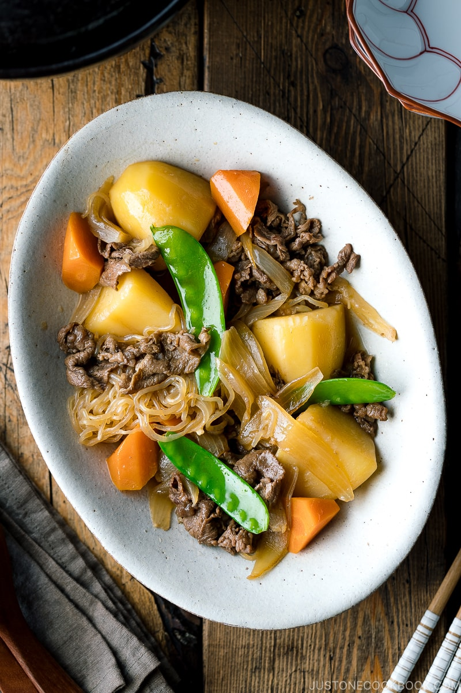

Nikujaga

Description
This Japanese comfort food is booth sweet and savory with tons of umami of course. The hardest part is cutting everything up. Once that is done, you are on your way to a hearty meal! Let's get started.
Ingredients
- Potatoes
- Thinly sliced beef
- Onion
- Shirataki noodles (Ito Konnyaku)
- Carrot
- Green Vegetables (Most commonly snow peas, green beans, or green peas)
- Seasoning-soy sauce, sugar, mirin, sake and dashi
Steps
- Blanch the green Vegetables of your choice in a separate small pot. Set aside for the last step.
- Cook shirataki noodles according to the package directions.
- In a large pot, cook the onion and then add meat.
- Add potatoes and coat them well with oil.
- Add the rest of the Ingredients, including the shirataki noddles.
- Add seasonings and simmer for 15 minutes.
- Let cool for 30-60 minutes.
- When ready to serve, add in blanched green Vegetables and reheat to serve.